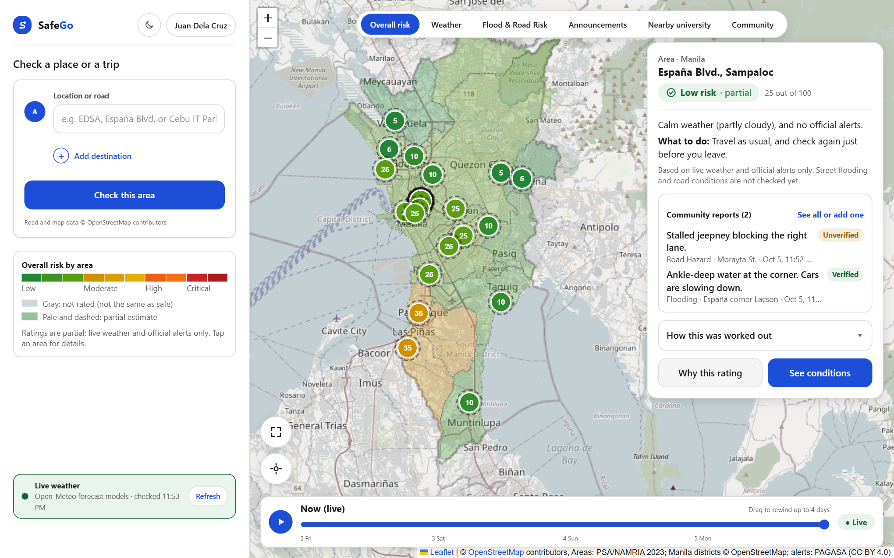
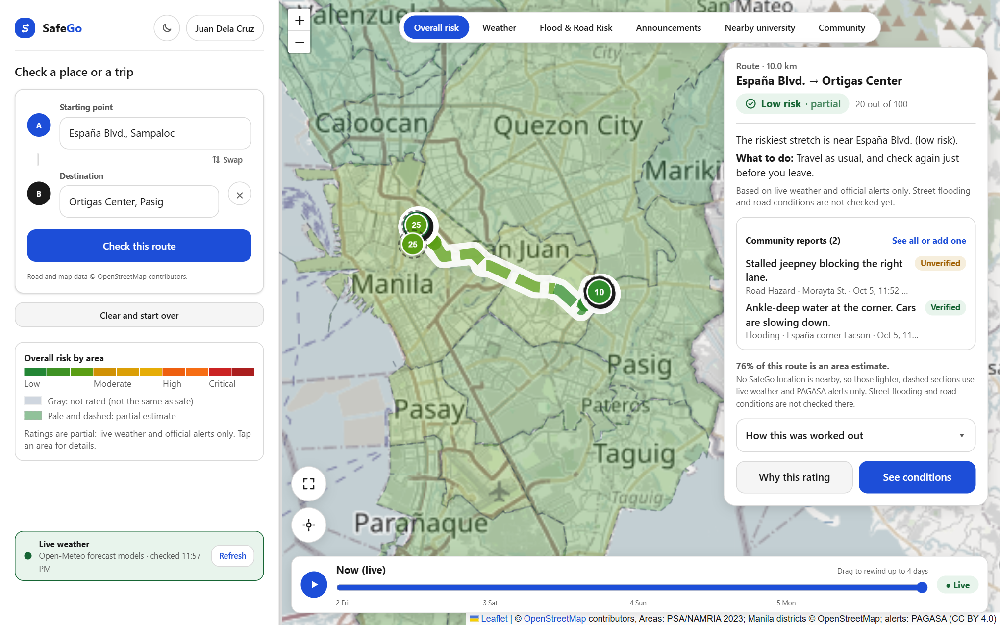
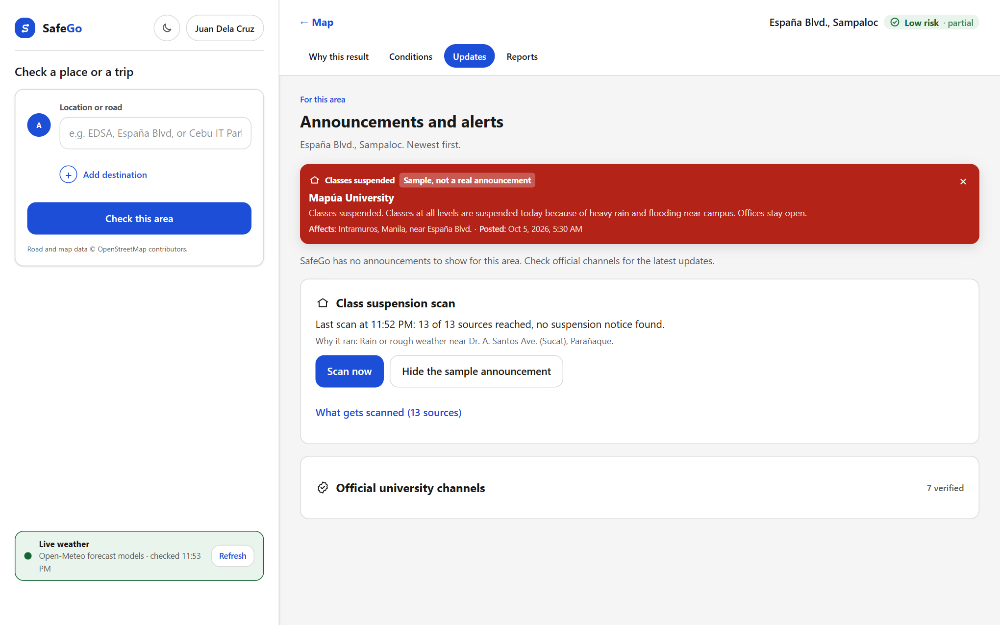
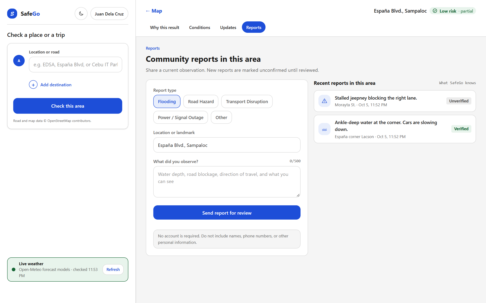
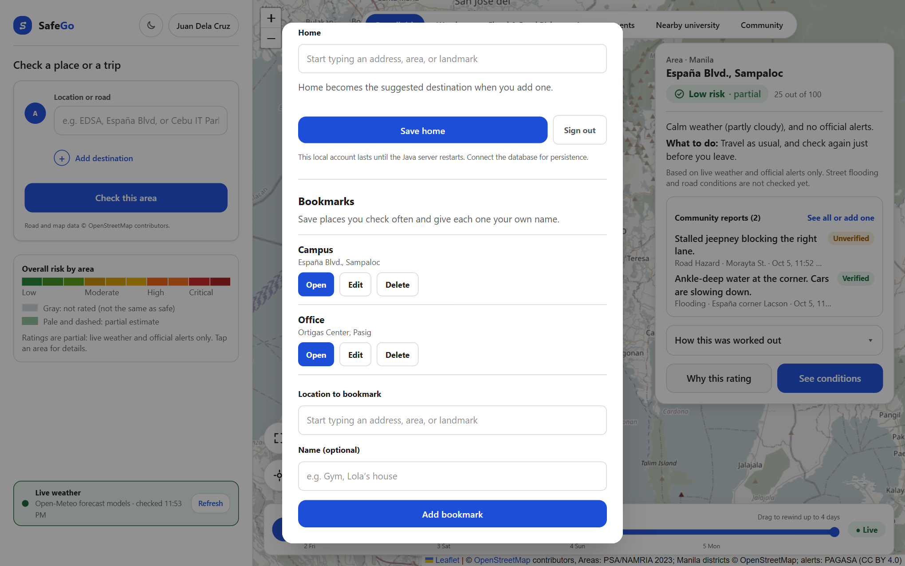
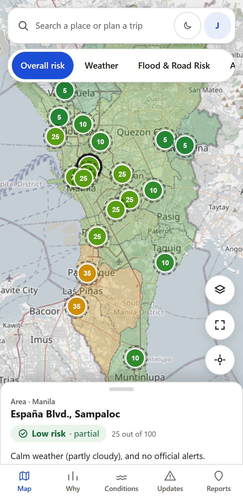
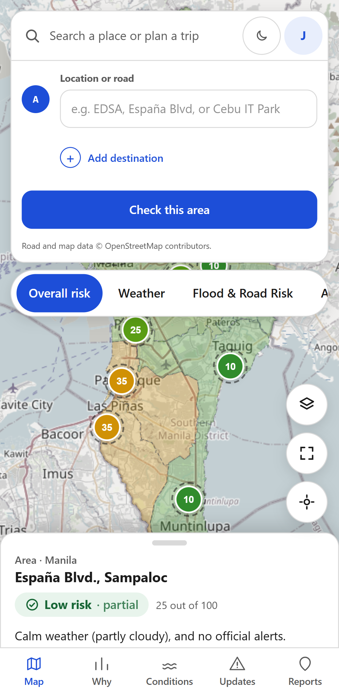
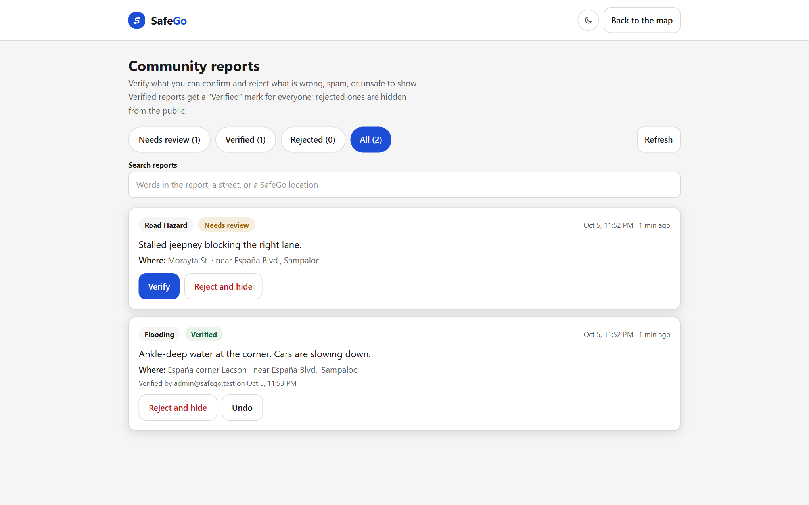

Checking weather risk, official alerts, trips and class suspensions across Metro Manila before you travel.
Document
System User Manual
Version
1.0
Date
October 5, 2026
Applies to
SafeGo web application, pilot release (Metro Manila)
Audience
Commuters and students, report administrators, and the people who run the system
Contents
1About SafeGo
2Getting started
3The main screen
4Checking a place
5Understanding the ratings
6Planning a trip
7Updates and class suspensions
8Community reports
9Accounts, Home and bookmarks
10Using SafeGo on a phone
11For administrators: reviewing reports
12For operators: running the system
13Troubleshooting
14Data sources and limitations
1. About SafeGo
SafeGo is a web application that helps people in Metro Manila decide whether and when to travel in bad weather. It combines live weather with official PAGASA alerts, rates each city and each stretch of a planned trip, and looks for class-suspension notices from nearby universities.
1.1 What SafeGo does
Shows a risk rating for each of the 17 cities and municipalities of Metro Manila, and for 20 specific SafeGo locations such as España Blvd. and Ortigas Center.
Explains each rating in plain language: what the conditions are, why the rating was given, and what to do.
Rates a trip between two places, stretch by stretch.
Lets you look back at conditions for the past four days.
Scans public sources for university class-suspension notices when it rains or the risk is high.
Lets people share and read community reports, which administrators can verify.
Keeps a Home location and bookmarks for signed-in users.
1.2 What SafeGo does not do
It does not measure street flooding or road conditions. Ratings are based on weather and official alerts only, and the application says so beside each rating.
It does not replace announcements from the government, PAGASA, or your school. Always confirm with official channels before you travel.
A low rating is not a guarantee of safety, and an area shown in gray is not rated, which is different from safe.
1.3 Who this manual is for
Reader
Sections to read
Commuters and students
Sections 2 to 10
Report administrators
Section 11, after sections 2 to 9
Operators who start and maintain SafeGo
Sections 12 to 14
2. Getting started
2.1 What you need
A current web browser (Chrome, Edge, Firefox or Safari) on a computer or phone.
An internet connection. SafeGo reads live weather, alerts and map images while you use it.
The SafeGo address given to you by the operator. On the computer that runs SafeGo, the address is http://localhost:3000.
No installation or account is needed to check a place or a trip. An account is needed only to save a Home location and bookmarks.
2.2 Opening SafeGo
Open your browser and go to the SafeGo address.
Wait a few seconds while the map loads and the ratings fill in. The box at the lower left shows Live weather and the time the data was last checked.
The first time you open SafeGo, a short tip explains the map. Close it with the × button.
2.3 Light and dark appearance
SafeGo follows your device's light or dark setting. To switch it yourself, select the sun or moon button beside the account button. Your choice is remembered on that device.
3. The main screen

Figure 1. The main screen on a computer, with España Blvd. selected.
Part
Where
What it is for
Planner
Left panel, top
Type a place to check it, or add a destination to check a trip.
Legend
Left panel, middle
Explains the map colours for the layer being shown.
Data status
Left panel, bottom
Shows whether live weather is being received and when it was last checked. Refresh updates it immediately.
Layer buttons
Top of the map
Choose what the map colours show: overall risk, weather, announcements and so on.
Map
Centre
Cities are shaded by rating. Numbered pins are SafeGo locations; the number is the score.
Details card
Right side
The rating for the selected place or trip, the reason, and what to do.
Map buttons
Lower left of the map
The frame button fits the map back to the selection. The target button shows your own location, if you allow it.
Timeline
Bottom of the map
Drag to see conditions at any hour of the past four days.
The application refreshes its data when it opens, every five minutes while it stays open, and whenever you select Refresh.
4. Checking a place
4.1 Selecting a place
There are three ways to select a place:
Type it. Enter a road, landmark or area in the planner. Suggestions appear as you type; pick one, then select Check this area.
Select a pin. Each numbered pin is a SafeGo location. Selecting it opens its details.
Select a city. Selecting any shaded area opens the details for that city, including its weather now and over the past four days.
SafeGo gives a full reading for its own locations. For a place that is not a SafeGo location, add a destination and check it as a trip (section 6).
4.2 Reading the details card
The card always answers the same questions, in this order:
How risky is it? A level in words (for example Low risk) with a score out of 100.
Why? One sentence about the weather and any official alert.
What to do. A short recommendation.
What was not checked. A note when the rating is partial (section 5.2).
Below these, the card shows any nearby class-suspension notice, any official alert, and the latest community reports. How this was worked out opens the list of factors behind the rating.
4.3 The detail pages
Select Why this rating or See conditions on the card to open the detail pages. Use the tabs at the top to move between them, and ← Map to return.
Tab
Contents
Why this result
The score, each factor that was considered, and whether it was counted.
Conditions
Flood and road information where a source is connected. In the pilot release this is usually empty.
Updates
Official alerts, university announcements and the class-suspension scan (section 7).
Reports
Community reports for the place, and the form to send one (section 8).
4.4 Changing what the map shows
The buttons above the map change the colouring. Overall risk is the default. Weather shows the weather score for every city. Announcements shows where an official PAGASA alert is in force. The remaining layers apply only near SafeGo locations. The legend in the left panel always describes the layer on screen.
4.5 Looking back in time
Drag the handle on the timeline to the left. The label changes from Now (live) to the date and hour being shown.
The whole map, the details card and the official alerts change to what was recorded at that hour.
Select the play button to step through the hours automatically.
Select Live to return to the present.
The timeline covers the past four days. Past weather comes from recorded data, so there is no forecast when you are looking at the past.
5. Understanding the ratings
5.1 Levels
Level
Score
Map colour
General meaning
Low risk
0 to 29
Green
Conditions are calm. Travel as usual and check again before leaving.
Moderate risk
30 to 59
Yellow
Rain or unsettled weather. Allow extra time.
High risk
60 to 79
Orange
Heavy rain or a significant alert. Delay the trip if you can.
Critical risk
80 to 100
Red
Severe conditions. Avoid travel unless it is necessary.
Not rated
None
Gray
SafeGo has no current data. This does not mean the area is safe.
Every rating is shown as a word, an icon and a colour together, so it can be read without relying on colour.
5.2 Partial ratings
A rating marked partial counts only the factors that have live data. In the pilot release these are weather (from Open-Meteo) and official alerts (from PAGASA). Street flooding, road conditions and school status are not counted because no live source is connected for them. A missing factor is never treated as zero risk; it is simply left out, and the card says so.
5.3 How the score is set
The weather score considers the current sky, the rain rate now, rain over the last hour, three hours and 24 hours, wind gusts, and the forecast for the next three hours.
The official-alert score comes from the severity of any PAGASA alert that covers the place.
A partial rating takes the higher of the two, so a place is never shown as safer than its worst live reading.
A city takes the highest score among the SafeGo locations in or beside it, combined with the weather at its centre.
Note. When rainfall reaches the amounts PAGASA uses for its yellow, orange or red rainfall warnings, SafeGo says so. This is an estimate from weather data, not an official PAGASA warning.
6. Planning a trip
In the planner, type the starting point and pick it from the suggestions.
Select Add destination, then type and pick the destination. If you have saved a Home location, it is suggested as the destination.
A preview of the route appears with its distance and the usual driving time.
Select Check this route.

Figure 2. A checked trip. The route is coloured by the rating of each stretch.
6.1 Reading the result
The card gives one overall rating for the trip and names the riskiest stretch.
Each stretch of the route line is coloured by its own rating.
Lighter, dashed stretches are area estimates. No SafeGo location is close to them, so they are rated from live weather and PAGASA alerts at that point only. The card states what share of the route is estimated.
A gray dashed stretch has no data and is not rated.
Use Swap to reverse the trip, the × beside the destination to go back to a single place, and Clear and start over to begin again.
7. Updates and class suspensions
The Updates tab gathers everything announced for the selected place or trip.

Figure 3. The Updates page with the sample announcement switched on.
7.1 Official alerts
Active PAGASA alerts that cover the place are listed with their severity and the time they remain in force. Select an alert's title to read the original on the PAGASA website.
7.2 University announcements
When a nearby university has suspended classes or moved them online, a coloured card appears at the top of the Updates page and on the details card of the map. Red means classes are suspended; blue means classes have moved online. Each card shows the university, the announcement, the campus it affects and when it was posted. If there is no announcement, nothing is shown.
Wording on the card
Meaning
No extra label
Found on the university's own website or in a government notice.
Reported by (a news outlet)
Found in a news report only. Confirm it on the university's official page, which the card links to.
Area-wide notice
A city-wide or Metro Manila-wide suspension for all levels. Confirm that it applies to your school.
Sample, not a real announcement
The example card described in section 7.4.
Dismiss a card with its × button. Announcements are removed automatically two days after they were posted.
7.3 The class-suspension scan
Universities usually post suspensions on Facebook first, and Facebook cannot be read automatically. SafeGo therefore scans 13 public sources that carry the same decisions: six university websites, the Official Gazette, and six news feeds.
The scan runs by itself when any SafeGo location has rain or rough weather, a high rating, or a PAGASA alert. Otherwise it stays on standby.
Scan now runs it immediately, whatever the weather.
What gets scanned lists every source and whether it was reached.
Note. "No suspension notice found" means none of the scanned sources carried one. It does not confirm that classes are being held.
7.4 Seeing a sample announcement
Select Show a sample announcement to display an example card, clearly labelled as a sample, so you know what a real one will look like. Select Hide the sample announcement or the card's × to remove it.
8. Community reports
Community reports are short observations from other users, such as a flooded corner or a blocked lane. The two latest reports for a place appear on its details card. The Reports tab shows all of them.

Figure 4. The Reports page: the form on the left, recent reports on the right.
8.1 Sending a report
Select the place, then open the Reports tab, or select Report something on the details card.
Choose a report type: Flooding, Road Hazard, Transport Disruption, Power / Signal Outage, or Other.
Enter the street or landmark (3 to 160 characters).
Describe what you saw (10 to 500 characters): water depth, what is blocked, which direction.
Select Send report for review.
No account is needed. Do not include names, phone numbers or other personal information. Up to five reports can be sent from one connection every ten minutes.
8.2 What happens to a report
Status
Meaning
Unverified
The report was received and is visible, but no administrator has confirmed it.
Verified
An administrator confirmed it.
(not shown)
An administrator rejected it, for example as spam or as incorrect. Rejected reports are hidden.
Reports are shown for information. They do not change a place's rating.
9. Accounts, Home and bookmarks
9.1 Creating an account and signing in
Select Sign in at the top of the left panel.
To create an account, select Create account and enter your email, a name, and a password of at least 10 characters that includes a letter and a number.
To sign in later, enter the same email and password.
You stay signed in on that browser for 30 days. To sign out, open the account panel and select Sign out.
9.2 Home
Type your home address or area in the Home field, pick it from the suggestions, and select Save home. Home is then offered as the destination whenever you add one in the planner. To remove it, clear the field and save.
9.3 Bookmarks

Figure 5. Bookmarks in the account panel.
To
Do this
Add a bookmark
Under Location to bookmark, type a place and pick it from the suggestions. Optionally give it your own name, such as "Office". Select Add bookmark. If a place is already selected on the map, it is filled in for you.
Open a bookmark
Select Open. A SafeGo location opens on the map. Any other place is placed in the planner as the starting point, ready for a destination.
Rename or move it
Select Edit, change the name, the location or both, then Save changes.
Delete it
Select Delete, then Yes, delete to confirm.
An account can hold up to 30 bookmarks. Names can be up to 60 characters.
10. Using SafeGo on a phone

Figure 6. The phone layout.

Figure 7. The planner, opened from the search bar.
On a phone the same features are arranged around a full-screen map.
Part
Use
Search bar
Tap it to open the planner. The buttons beside it switch the appearance and open your account.
Layer buttons
Swipe sideways to see them all.
Bottom sheet
Shows the rating. Drag the handle up for more detail and the timeline, or tap it to step through its three heights.
Round buttons
Legend, fit the map, and my location.
Bottom tabs
Map, Why, Conditions, Updates and Reports.
To keep SafeGo on your home screen, use your browser's Add to Home screen option.
11. For administrators: reviewing reports
Administrators confirm or remove community reports. An administrator is an ordinary SafeGo account whose email the operator has listed as an admin (section 12.4).
11.1 Opening the admin page
Sign in with your admin account.
Open the account panel and select Review community reports, or go to the SafeGo address followed by /admin.
Anyone else who opens the page sees an "Admins only" message, and the server refuses to send them the reports.

Figure 8. The admin page, showing all reports.
11.2 Reviewing
Action
Result
Verify
The report is marked Verified for everyone.
Reject and hide
The report is removed from public view. It remains in the admin list under Rejected.
Undo
Returns a verified or rejected report to Needs review.
The tabs filter the list: Needs review, Verified, Rejected and All, each with a count.
The search box finds reports by their wording, street, or SafeGo location.
Each review records the admin's email and the time.
The list refreshes every 30 seconds; Refresh updates it immediately.
11.3 Guidance
Verify only what you can confirm, for example from an official post, a second report, or your own observation.
Reject spam, advertising, reports containing personal information, and reports that are clearly wrong.
If you are unsure, leave the report as it is. It stays visible as Unverified.
12. For operators: running the system
12.1 Requirements
A Windows computer with Node.js and JDK 21 installed, and the SafeGo project folder with its packages installed (npm install).
Internet access for live weather, PAGASA alerts, map images and routing.
Ports 3000 (web application) and 8080 (data service) free.
12.2 Starting and stopping
Task
How
Check readiness
Run npm run doctor in the project folder. Every line should read OK.
Start
Double-click Start SafeGo.cmd. A window opens, builds the application if needed, and opens the browser when SafeGo is ready. Keep the window open.
Stop
Close that window, or double-click Stop SafeGo.cmd.
Apply a change to settings or code
Stop SafeGo, then start it again.
The first start after a code change takes about 40 seconds because the application is rebuilt. Later starts take about 15 seconds.
12.3 Where information is kept
In the default local mode, accounts, bookmarks and community reports are held in memory. They are lost each time SafeGo is stopped. To keep them, connect a PostgreSQL database, run npm run db:migrate, and set the data mode to database.
12.4 Settings
Settings are lines in the file .env.local in the project folder. Restart SafeGo after changing them.
Setting
Purpose
SAFEGO_ADMIN_EMAILS
Comma-separated emails of the accounts allowed to review reports. If empty, nobody is an admin.
SAFEGO_DATA_MODE
local (memory only) or database.
SAFEGO_COMMUNITY_REPORTS_ENABLED and SAFEGO_MODERATION_ENABLED
Both must be true for people to send reports.
SAFEGO_UNIVERSITY_SCAN
auto (scan when conditions call for it), always, or disabled.
SAFEGO_WEATHER_PROVIDER
open-meteo, or disabled to work offline.
13. Troubleshooting
What you see
What to do
"Can't reach SafeGo's server" on the map
The data service is not responding. Wait a moment; SafeGo retries by itself. If it continues, the operator should restart SafeGo.
Areas stay gray
Live weather has not arrived. Select Refresh and check the internet connection.
"SafeGo could not locate…" when saving a place
Pick the place from the suggestions, or type a more specific address or landmark.
A trip takes long, then fails
The routing service is slow or unreachable. Try again in a minute.
My account or bookmarks are gone
SafeGo was restarted in local mode (section 12.3). Create the account again.
The admin page says "Admins only"
Sign in with the exact email listed in SAFEGO_ADMIN_EMAILS. After changing that setting, SafeGo must be restarted.
The admin page or a new feature is "not found"
SafeGo is still running an older build. Stop it and start it again.
SafeGo will not start: a port is in use
Run Stop SafeGo.cmd, then start again.
The scan says a source was "Not reached"
That website was slow or down. The other sources still count; try Scan now again later.
My location does not appear
Allow location access for the SafeGo address in your browser, then select the button again. Your location is used only on your device.
14. Data sources and limitations
14.1 Sources
Information
Source
Weather, now and past four days
Open-Meteo forecast and historical models
Official alerts
PAGASA public alerts (CAP feed)
Map images and place search
OpenStreetMap contributors
Driving routes
OSRM, using OpenStreetMap data
City boundaries
PSA and NAMRIA, 2023
Class-suspension notices
University websites, the Official Gazette, and public news feeds
14.2 Limitations
Weather comes from forecast models, not from rain gauges at each street. Local conditions can differ.
There is no live source for street flooding, road closures or traffic in the pilot release.
Each city's weather is read at one central point, so a large city such as Quezon City is represented by a single reading.
The class-suspension scan cannot read Facebook, where many schools post first. A notice may exist that SafeGo has not found.
Notices found only in the news are labelled as reported until the school's own source confirms them.
Community reports are observations from the public and may be wrong, even when recent.
Important. SafeGo supports your decision; it does not make it. Follow instructions from PAGASA, your local government and your school, and do not travel through floodwater.